Лаб. №2 Аппаратно-программные средства Web, Поладов Михаил ПИ21/1
С помощью утилиты telnet localhost 80 подключаемся к серверу localhost с помощью telnet соединения
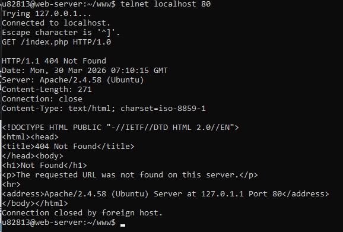
Войдя в режим ввода команд telnet, вводим команду GET /index.php HTTP/1.0
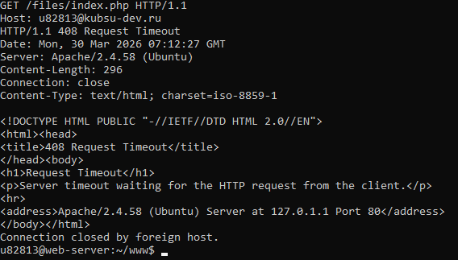
Далее скопируем и вставим команду с набором заголовков для получения содержимого файла index.php
GET /files/index.php HTTP/1.1
Host: u82813@kubsu-dev.ru
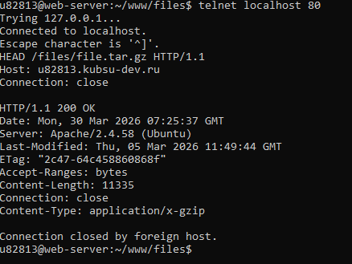
HEAD /files/file.tar.gz HTTP/1.1
Host: u82813@kubsu-dev.ru
Connection: close
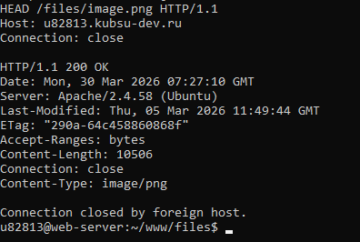
HEAD /files/image.png HTTP/1.1
Host: u82813@kubsu-dev.ru
Connection: close
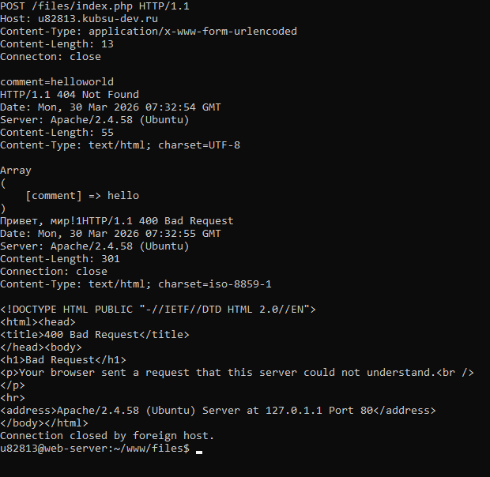
POST /files/index.php HTTP/1.1
Host: u82813@kubsu-dev.ru
Content-Type: application/x-www-form-urlencoded
Content-Length: 13
Connection: close
comment=helloworld
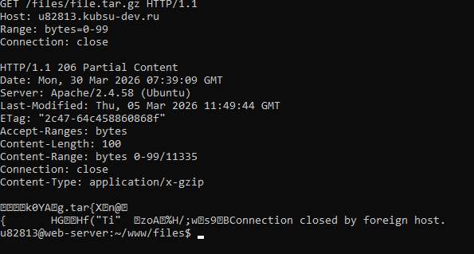
GET /files/file.tar.gz HTTP/1.1
Host: u82813@kubsu-dev.ru
Range: bytes=0-99
Connection: close
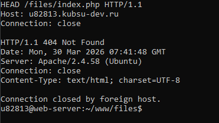
HEAD /files/index.php HTTP/1.1
Host: u82813.kubsu-dev.ru
Connection: close
Инициализируем удаленный репозиторий и отправляем сверстанный сайт
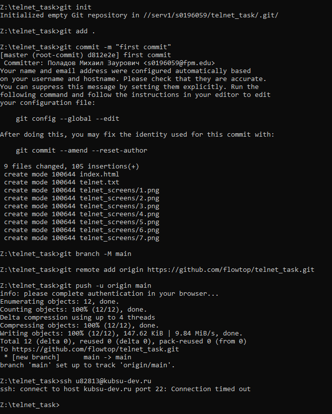
Клонируем данные из созданного репозитория на удаленный сервер
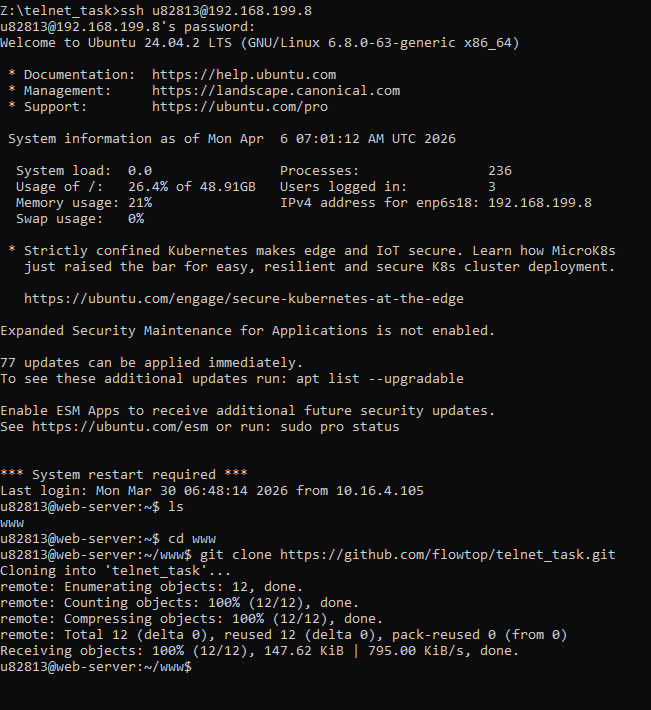
Добавим скрины с новыми изменениями
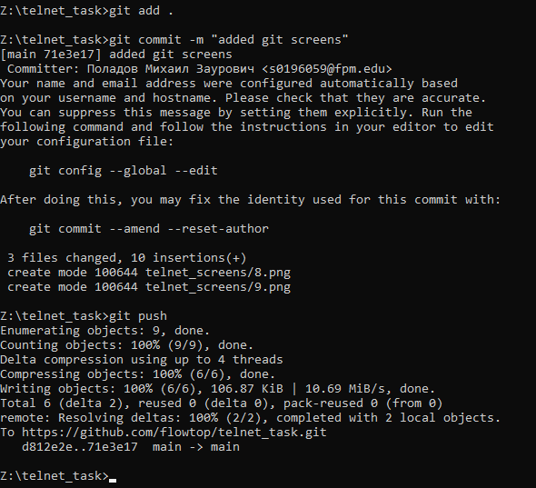
Обновим данные
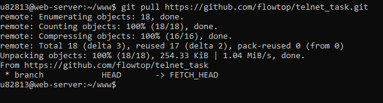